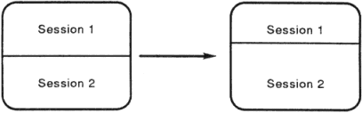

| Chapter 6 | Contents | Chapter 8 |
This chapter describes how to:
With two sessions, your VT420 becomes two terminals in one. You can also use the VT420 as a conventional one-session terminal.
Running two sessions offers many advantages. For example, you can easily display and compare data from two different jobs at the same time. To display data from two sessions, you divide the screen into two windows. You can also copy and paste text from one session to another.
A video terminal lets you exchange information with a computer system. In order to communicate with the host system, you must open a session from your terminal. A session is an active connection between the terminal and a host system. On many systems, you open a session by logging in to the system.
The VT420 lets you run two sessions at the same time. Opening two sessions is easy. After you set up the VT420 for two sessions, you can use the F4 (Session) key to move back and forth between two sessions. The session you are using is called the active session. The next section describes how to open two sessions.
You can connect the VT420 to a host computer, a terminal server, or a modem. This means you can run two sessions on the same host system or on two different systems.
The VT420 uses a communication cable to exchange information with a computer. You can use one or two communication cables for two sessions. To use one cable, your system must have Digital's Session Support Utility software or a terminal server that supports multiple sessions.
Chapters 2 and 3 describe how to install communication cables and set up the terminal for two sessions. This section describes how to use two sessions after you set up the terminal correctly.
The way you open two sessions depends on how many communication cables you use. The following sections describe how to open two sessions if you use:
This section describes how to open two sessions if you use two communication cables.
IMPORTANT: Make sure your VT420 is set up correctly before you try to open two sessions. Chapter 3 describes how to set up the terminal for two sessions using two cables.
You open session 1 the way you normally do on your host system. The VT420 always connects you to the system assigned to session 1. This assignment is based on the cable connections at the rear of the terminal. To assign a system to a session, you use the terminal comm ports feature in the Global Set-Up screen.
After you open session 1, you press the F4 (Session) key and open session 2 the same way you opened session 1. When you press F4 (Session), the VT420 maintains session 1. The session can still receive information from the host system. No information is lost.
If your terminal does not respond correctly when you press F4 (Session), repeat the set-up procedure for two sessions in Chapter 3.
The following example shows you how to open (log in to) two sessions on one of Digital's VAX/VMS systems:
NOTE: The Guide to Using VMS provides detailed information on how to log in to the VMS operating system.
To open session 1:
The system does not display your password. When you correctly type your name and password, the system displays a VAX/VMS version number and a $ (dollar sign) prompt. The $ indicates you have logged into session 1 successfully.
The login sequence looks like this:
Return
Username: Smith Return
Password: (not displayed) Return
To open session 2: Press the F4 (Session) key and repeat the login sequence.
If your system has Digital's SSU software or a Digital terminal server that supports multiple sessions, you can run two sessions over one communication cable. Your system manager can tell you if your system has either one.
If your system has Digital's SSU software, use the following procedure to run two sessions over one communication cable:
IMPORTANT: Make sure your VT420 is set up correctly before you try to open two sessions. Chapter 3 describes how to set up the terminal for two sessions, using one cable and SSU software.
To open session 1:
Enable SSU with two sessions on your terminal line.
On a VAX/VMS system, enter the following command at the $ prompt:
$ SSU ENABLE Return
The terminal should display the following response on the status line at the bottom of the screen:
Done
The first session is now open.
NOTE: If you type information before the Done message appears on the status line, the terminal displays the Service name = prompt.
To open a second session:
NOTE: If you did not enable SSU in step 2 above, the host system will not respond when the terminal tries to open the second session. After 10 seconds, the warning bell rings twice and a message appears on the status line, indicating that the host did not respond.
The system prompts you for the service name.
Service name = ____________________
VAX/VMS systems ignore the service name. Go to the next step.
Session Open Request Pending
immediately followed by
Session Opened
Session 2 is now open. On a VAX/VMS system, you should see a login prompt on the screen. On other systems, the system is ready for the login procedure.
The DECserver 200 and DECserver 300 terminal servers support multiple sessions. If your system has one of these terminal servers, you can use the following procedures to run two sessions over one communication cable. First, you must define your terminal server port for multiple-session use.
At the Local> prompt, enter the following command:
Local> DEFINE PORT MULTISESSIONS ENABLED Return
The terminal displays the following response on the status line at the bottom of the screen:
Done
The terminal server port is now defined for multiple sessions. This setting remains in effect after you log out. You do not have to repeat this command each time you log in to the terminal server.
Now, you can open two sessions.
To open session 1:
At the service name prompt, enter the node name. Your system manager can tell you the node name.
Service name = {Node name} Return
The following response appears on the status line at the bottom of the screen:
Session Opened
Session 1 is now open on the terminal server. Now, you should log in to your system.
To open session 2, repeat the three steps used to open session 1.
Log out from one session the way you normally do.
The terminal displays a response indicating that you logged out.
Then the terminal server displays a response that indicates which session (1 or 2) you closed:
Local -nnn- Session n disconnected from (Node name)) Local -nnn- 1 other session(s) active
At the Local> prompt, enter the following command:
Local> DEFINE PORT MULTISESSIONS DISABLED Return
The terminal displays the following response on the status line at the bottom of the screen:
Done
The following response appears after the logout response:
Local -XXX- Session Management terminated
Multiple sessions are now disabled from your terminal's port on the terminal server.
You can restore sessions that are interrupted by one of the following events:
When a session is interrupted, the VT420 or the host system may lose the context of the current session. After the terminal and system regain communication, you can restore the context of the interrupted session without canceling the session and starting over again.
To restore a session: Press the F4 (Session) key.
The VT420 displays SSU screen and error messages on the line at the bottom of your screen. The messages disappear when you press any keyboard key.
The following paragraphs describe each SSU message. If the message is an error message, the keyboard's warning bell rings twice before the message appears.
Sessions not enabled - Unable to run wit host Session Management version
The terminal's version of SSU firmware does not match the system's version. Check with your system manager.
Sessions not enabled - No Session Management response from host
The system's SSU software is not working or is not installed. Also, you may have lost your connection with the system. Check with your system manager.
Sessions enabled - Restarting previous sessions
The host system is servicing an SSU request. Wait briefly for the message to disappear.
Session open request pending
The host system is servicing an SSU request. Wait briefly for the mesage to disappear. If the message is followed by No response from the host for SSU Session Management, check your connection to the host. If your terminal has been disconnected from the host, you must log in and start your SSU sessions over again.
Insufficient host resources to open session
There is an erorr at the host system's end of the SSU session. Contact your system manager for help.
Data overrun occurred on Session (1 or 2)
A communication error has occurred between the terminal and the host system. If this message disappears and does not reappear, the host has corrected the error on its own. If the message continues to appear, contact your system manager for help.
Session (number) terminated abnormally
The host system has ended the session. Try opening the session again. If you cannot reopen the session, there is a problem with the host system. Check with your system manager.
You can display information from two sessions at the same time, by using windows. However, you can only enter information in one session at a time. There are two ways you can tell which session is active.
Look at the cursors. The active session usually has a blinking cursor. The inactive session has a steady cursor.
NOTE: The cursor blink feature in the Display Set-Up screen lets you select a blinking or steady cursor for the current session.
You can display 24, 25, 36, or 48 lines of information at one time on the screen. By default, 24 lines are visible at one time (excluding the status line at the bottom of the screen). If you display 36 or 48 lines on the screen, the size of the characters will be smaller. The lines/screen feature in the Display Set-Up screen controls how many lines you can see on the screen at one time.
The number of lines on the screen also depends on the number of lines on a page in page memory. For example, if you select 48 lines/screen but the page size is 24 lines, then you will only see 24 lines of information from that session. This is the case even if there is room for more lines on the screen. If you are running two sessions, you can select 48 lines/screen to display 24 lines in each session.
The number of lines on the screen is a user preference feature. You may have terminal management software that automatically selects the appropriate number of lines on the screen. However, if you want to change the setting manually, use the following procedure:
NOTE: If you are running two sessions and you want to change the number of lines/screen setting for each session, you must make the change for each session individually.
The Display Set-Up screen contains the lines/screen feature.
A window is an area of the screen that displays information from one session. You can divide the VT420 screen into two windows by opening two sessions.
The amount of information you can display is determined by:
Normally, the VT420 uses a full-screen window. In this window, you can only display one session at a time. A full-screen window lets you display 24, 25, 36, or 48 lines of text in 80 or 132 columns. If you use two sessions, you can switch between sessions with the F4 (Session) key.
| Press F4 (Session). |
The VT420 lets you divide the screen into two windows. When you divide the screen into windows, each window can display 12, 18, or 24 lines of text in 80 or 132 columns. The default is one-half the number of the lines/screen setting you selected.
Before you use two windows, make sure the terminal comm ports feature in the Global Set-Up screen is set correctly. See Global Set-Up screen in Chapter 5.
To select a new window style, press Ctrl F4 (Session). Each time you press Ctrl F4 (Session), the style of window on the screen changes.
| Pressing Ctrl F4 (Session) | Gives You... |
|---|---|
| One time | Two windows |
| Again | A full-screen window again |
IMPORTANT: Before you use windows, read the next section on keeping the cursor visible.
To select two windows:
| Press Ctrl F4 (Session) once... |
To select one full-screen window again:
| Press Ctrl F4 (Session) again. |
When you divide the screen into windows, half of the area for the active session may disappear. If the cursor for the active session is in the area that disappears, the cursor may also disappear.
For example, if the screen has 24 lines and you divide the screen horizontally, the top window displays only the top 12 lines of that session. If the cursor is between lines 13 and 24, you cannot see the cursor.
To make sure the cursor stays visible, you can use the coupling features in the Display Set-Up screen (Chapter 5).
| If you use one or two windows | Make sure the vertical coupling feature is set to Vertical Coupling. |
| If your application uses multiple pages and you move from page to page in page memory. | Make sure the page coupling feature is set to Page Coupling. |
When you use two windows, you can change the relative size of the windows. The VT420 displays a border between the two windows. You can move the border up or down:
|  |
| Press Shift Ctrl to move the border up (or Shift Ctrl to move the border down). |
| To move the border... | Press... |
|---|---|
| Up | Shift Ctrl |
| Down | Shift Ctrl |
If the vertical coupling feature is enabled, data on the screen may appear to skip up and down when you move the cursor beyond the top and bottom border of a window. The skipping occurs because the VT420 must update the screen to keep the cursor visible.
This problem occurs most often with applications that involve frequent cursor action (for example, word processors). Here are a few suggested solutions:
Disable the vertical coupling feature in the Display Set-Up screen. This step will stop the skipping motion on the screen. However, the cursor will disappear if it moves to an area of the terminal's memory that is not on the screen.
For example, if you split the screen so that each session displays 12 lines of text, the cursor will disappear if it moves to line 13 in either session.
Set the application to use only the number of lines actually displayed. When you split the screen horizontally, the terminal displays 12 lines in each session by default. Many applications have commands to limit the number of lines available for editing. Here are two examples.
You can pan the window for the active session, to view more data in page memory. Panning a window is similar to panning a camera. When you pan a camera over a subject, you can see different parts of the subject while standing in the same position. When you pan a window, you can see another part of page memory without moving the window on the screen.
You can pan a window up or down. You can also pan to another page in page memory. To pan a window, you use the following keystrokes:
| To pan... | Press... |
|---|---|
| Up | Ctrl |
| Down | Ctrl |
| Back one page | Ctrl Prev |
| Forward one page | Ctrl Next |
Panning directions are the opposite of scrolling directions. For example, when you pan up, data appears to scroll down the screen. The following figure shows the difference between scrolling and panning.
Your cursor may disappear from the screen when you use panning functions. There are two ways you can bring the cursor back on the screen.
The VT420 provides a simple procedure for copying and pasting data within an active session or between two active sessions. The VT420 stores the copied data in a buffer before sending the data to the host. The paste buffer can hold one 24-line page of text data.
To copy text into the paste buffer:
Press and hold the F1 (Copy) key down for the rest of the copy operation. If the cursor was not visible, it appears when you press F1 (Copy).
NOTE: Releasing F1 (Copy) before completing the copy operation cancels the operation.
After you complete the copy operation, the terminal places the copied text in the paste buffer and erase the underline from the text on the screen.
After you copy text to the terminal's paste buffer, you can paste the text into an active session. When you paste the text, it appears on the screen as if it were typed from the keyboard. You can paste text into a file. To paste text:
If you are editing a file, use the arrow keys to position the cursor where you want to paste the text.
If you are at the command level, text will appear on the command line when you paste it.
The terminal sends a copy of the text in the paste buffer to the active session. The text also remains in the paste buffer until you:
The following figure shows an example of copying and pasting text from one active session to another: